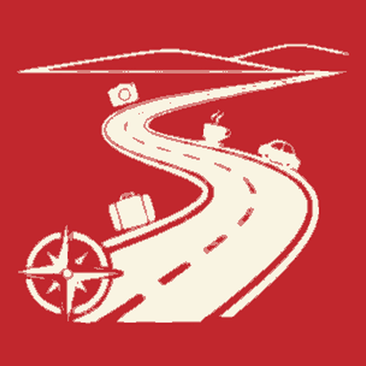

המפה שלךלמפה המלאה ←
לחצו על תחנה כדי לעבור אליה
לפני שמתחילים לשלוח קורות חיים לכל משרה שנראית אפשרית עבורי כדאי לעצור ולחשוב. מה בתכלס מחפשים. כאן נמקד אותך רק בשאלות שהן MUST

ממלאים פרטים, ומקבלים את "מצפן למשרה הבאה שלי" עם כל התשובות שלך.
מדפיסים אותו ותולים במקום בולט :)
בזמן חיפוש העבודה כדאי שהמצפן יהיה מול העינים, כדי לאתר משרות והזדמנויות שמתכתבות עם מה שכתוב בו.